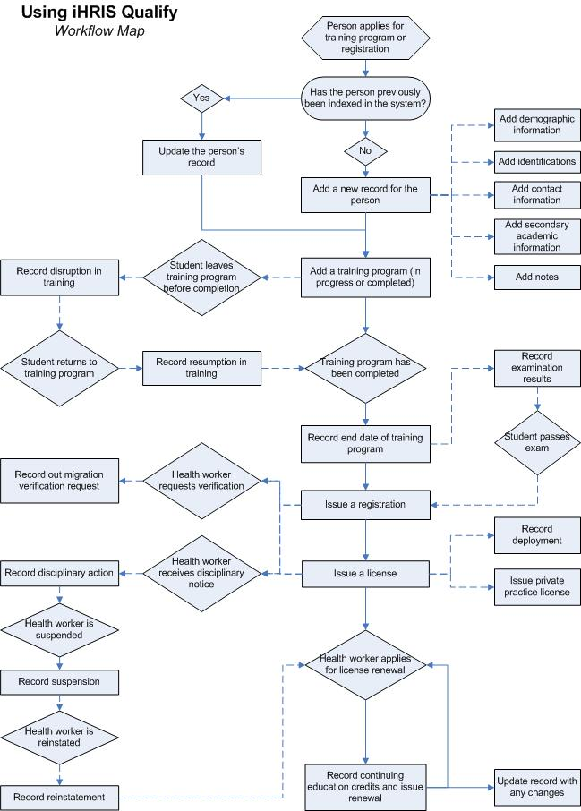

Understanding iHRIS Qualify (4.0.4)
Return to the iHRIS Qualify User Manual index page.
iHRIS Qualify is a training, certification and licensure system that collects and aggregates data on a complete cadre of health care workers in a country from pre-service training through attrition. The system is typically managed by the licensing or certification authority for a health worker cadre, such as nurses or physicians. The database captures information about health professionals from the time they enter training through registration and licensure, and it is updated every time a professional's license or certification is renewed. iHRIS Qualify can also track continuing medical education credit hours attained by health workers, capture data about foreign-trained workers applying to work within the country and record out migration verification requests. Thus, it provides a country-level picture of a cadre of health workers, whether in training, employed in the public sector or employed in the private sector.
A policy maker can analyze the data captured by iHRIS Qualify to answer critical human resources for health policy and management questions, such as the following:
- How many trained students pass the certification/accreditation exam?
- Of the students who pass the exam, how many register to practice?
- How many health workers are deployed in each region and where are they working?
- How many health workers are working in the public sector, private sector or both?
- Are health professionals meeting their continuing education requirements?
- For what reasons are health workers out migrating to work in other countries?
iHRIS Qualify is intended for use by a health cadre licensing or certification authority. This authority is generally an autonomous council that regulates the registration, operations and conduct of a cadre of medical professionals within a country's health workforce. The council may be charged with enforcing minimum qualifications for students entering health training programs, administering national-level examinations that qualify a graduating student to practice within the country, maintaining licenses for health professionals that are renewed periodically, verifying that continuing medical education requirements have been completed before renewing licenses, issuing private practice licenses to qualified health professionals, verifying qualifications of foreign-trained health workers applying to work within the country and verifying qualifications of health workers applying to work in foreign countries. The council would use iHRIS Qualify to capture, update and report on data from all of these activities.
Typically, there are separate authorities to regulate doctors, dentists, nurses, pharmacists and allied health professionals. Each separate authority would maintain its own iHRIS Qualify system, but data from all systems may be aggregated to provide a complete picture of the country's health workforce.
Understanding iHRIS Qualify
Version 4.0 of iHRIS Qualify includes several features designed to store and report health worker information:
- Record Management: Record information about each health worker, such as citizenship, marital status, birth date, contact information, educational qualifications and identification numbers.
- Pre-Service Training Management: Track students entering pre-service training programs and monitor completion rates as well as reasons for training disruption.
- Examination Management: Record applications for national-level certification examinations and tracks exam results.
- Registration and Licensing Management: Issue registration numbers, licenses and license renewals for health professionals, track deployments, issue private practice licenses, manage out-migration verification requests and record disciplinary actions.
- A Reporting Module: Aggregate, analyze and export data in a variety of ways to answer key management and policy questions as well as generate facility lists and health worker directories.
- Search: Search for health worker records in the system.
* Offline data entry support for entering data into a desktop (Windows) version of the system when not connected to the Internet (download and install the offline version of iHRIS Qualify separately)
The following features ensure security and accuracy of data stored in the system:
- Error checking and data correction by authorized data managers to ensure data integrity
- Automated logging of the username, date and time when data are entered or changed for auditing purposes
- Permanent archiving of all data changes to ensure a consistent record of each health professional's work history
iHRIS Qualify is extensible to the other iHRIS products, iHRIS Manage, a human resources management system for Ministries of Health and other employers of health workers, and iHRIS Plan, workforce modeling and planning software. For more information, please contact the iHRIS Development team (see Contacting the iHRIS Development Team).
User Roles
Five user roles can be assigned in iHRIS Qualify. The user role limits the activities that the person can perform in the system and helps enforce data quality and management protocols.
- System Administrator is responsible for ensuring that system security procedures are enforced and for keeping the system maintained and functioning. The System Administrator can view any record and perform any action in the system. The System Administrator also configures the system and manages the user accounts.
- Data Operations Manager is a manager of data entry personnel and is responsible for managing all system data and for ensuring that data in the system are complete, correct and up to date. The Data Operations Manager can view any record and perform any action in the system. The Data Operations Manager also runs reports and analyzes data. In addition, the Data Operations Manager is the only role (other than the System Administrator) that can create standard lists of data and correct data entered in the system.
- Registration Supervisor is a high-level data entry person responsible for issuing registrations and licenses to health professionals. The Registration Supervisor can generate registration numbers, issue and renew licenses, issue private practice licenses and record health worker deployments. The Registration Supervisor can also enter or update any other information in the record, such as contact or training information. However, the Registration Supervisor cannot correct erroneous information or create standard lists of data. The integrity of the data entered by the Registration Supervisor is enforced by the Data Operations Manager.
- Records Officer is a data entry person who is responsible for entering and updating records of students entering training programs and for maintaining general information about health professionals. The Records Officer role can view and update any record in the system and can run reports. However, the Records Officer role cannot issue registrations or licenses, correct erroneous information or create standard lists of data. The integrity of the data entered by the Records Officer is enforced by the Registration Supervisor and the Data Operations Manager.
- Decision Maker is a high-level policy maker. The Decision Maker runs reports and analyzes data entered in the system in order to set health workforce policy. The Decision Maker can view any record in the system and access all reports but cannot update or change data entered in the system.
System Functions in Summary
The diagram below illustrates the flow of actions in the iHRIS Qualify system from the time a health worker enters a training program through when the health worker leaves the workforce. Each diamond represents a trigger point when there is a change in the health worker's status, and each box describes the action that can be taken to record that change in the system. Processes linked by dotted lines are optional and are not required for using iHRIS Qualify.

System administration functions
Install and configure system: The System Administrator installs the system files and accesses the configuration screen to set global system options, install and turn on modules, and set options for modules.
Set up user accounts: The System Administrator creates password-protected user accounts for all authorized users of the system and assigns each user a role. If the user information changes, the System Administrator updates the user account. If the user no longer has access to the system, the System Administrator disables the user account.
Please see the System Administrator Manual for more information on system administration functions. The System Administrator Manual will be released in June 2009.
Database management functions
Set up standard data lists: The Data Operations Manager determines which specific data items to track and report on in the system, and updates lists to include those items. These lists determine the selection items in dropdown menus used when creating employee records and define the data standards used by the organization. These lists include items associated with tracking licenses, such as qualifications and cadres; items used to define health worker characteristics, such as marital status; geographical locations and health facilities, training institutions and training programs.
Record management functions
Add a new record: When a person applies either to enter a training program or to be registered as a health professional within the country, a Records Officer adds a new record for the person to the system with the person's name, nationality, geographical area of residence and supporting information, including identification numbers, demographic and academic data, and contact information.
Note that this information may be updated in any record at any time.
Pre-service training management functions
Add a training program: The Records Officer records the details of the training program that the person has entered or completed, whether inside or outside the country. The name of the training institution, the health worker cadre in which the student is to train, and the month and year of intake are recorded. The student is issued an index number for the duration of the training. If the student has graduated, the graduation date can also be recorded, and the student will be eligible to apply for registration.
If the student is upgrading his or her qualifications, the Records Officer can record the new training program in the student's record to signify that the person is qualified to practice in another cadre. The system will track registrations, licenses and other activities for each cadre separately.
Record a discontinuation: If the student discontinues a training program before completing it, the Records Officer can record the date of and reason for the discontinuation. (This function is optional.)
Record a resumption: If the student resumes training after discontinuing it, the Records Officer can record the date of resumption, making the student eligible to take national exams or apply for registration.
Examination management functions
Record exam details: Some organizations may administer national examinations for health workers leaving training programs and will want to record students' results in the system. In those cases, the optional examination module may be used. The Records Officer can record that the student applied to take the national examination and submitted all of the required preliminary materials. The student's examination results and number of attempts are also recorded. (This function is optional.)
Note that even if the student has taken and passed the examination, the student will not be eligible for registration until a training graduation date is recorded.
Registration and licensing management functions
Issue a registration: When a student completes a training program and applies for registration as a health worker, the Registration Supervisor can record the date of the application and the registration date. The system then issues a registration number, which will become the health worker's permanent identification number in the system.
Issue a license: After the health worker has registered, s/he may apply for a license to practice. The Registration Supervisor can issue the license to the health worker and record the start date and expiration date for the license in the system.
Renew a license: When the license expires, the health worker may apply for a renewal. The Registration Supervisor can record the start date and expiration date for the renewal.
Record continuing education courses: As the health worker completes in-service continuing medical education, the Registration Supervisor can record the name and number of credit hours of each course in the person's record. The Registration Supervisor can then verify that the health worker has completed the required number of credit hours before renewing their license. (This function is optional.)
Issue a private practice license: If the health worker has applied to operate a private practice clinic, the Registration Supervisor can enter the name of the clinic and its inspection report results. The Registration Supervisor can then issue a private practice license, which will have to be renewed periodically. (This function is optional.)
Document a disciplinary action: If the health worker receives disciplinary action or a suspension, the Registration Supervisor can record the reason for the action and which type of action was taken. (This function is optional.)
Document a reinstatement: If the health worker was suspended, the Registration Supervisor or Records Officer can record the date of reinstatement so that the health worker is eligible to apply for a license renewal.
Record a deployment: If the health worker is deployed to a health facility, the Registration Supervisor or Records Officer can add the deployment information to the person's record, including the name of the health facility, the job title and the job code. (This function is optional.)
Record a request for out migration verification: If the health worker applies to practice in another country, the licensing agency in that country generally requests verification of the health worker's credentials. The Registration Supervisor or Records Officer can record the request for verification in the health worker's record, including the reason given for out migrating. (This function is optional.)
Search
Data entry staff, Data Operations Managers and Decision Makers can search the system for student and health worker records. They may then review a person's record on the screen or print a copy.
Reporting
System Administrators and HR Managers can design and save custom reports and report views to display and aggregate data entered in the system. (System Managers also define report relationships, high-level relationships between system forms used to define reports.) HR Staff and Executive Managers may access saved reports to analyze the employee data. These reports might include:
- Health worker lists, filtered by various criteria; for example, lists of current students, registered workers and licensed workers in various cadres can all be generated
- Training institution lists, with contact information for each training institution or facility in the country
- Statistical charts to aggregate data by various criteria and display them in a graphical view
Planned Features
Version 4.2 of iHRIS Qualify, which this manual accompanies, provides a complete solution for registering and licensing a cadre of health workers. Later releases will support additional modules and functions, including:
- Customizable roles to enable system administrators to create roles other than the five pre-configured roles and assign them tasks that they can perform in the system
- Customizable headers to enable database managers to easily change header or field names for their context (i.e., change District to State or Province).
- Expanded in-service training tracking to record and assess continuing education of health workers
New features and development are ongoing. As this is an Open Source development project, volunteers and other organizations may also contribute to the core code. Check the iHRIS Qualify page on the HRIS Strengthening Website for the most up-to-date list of planned features and a development calendar.
Return to the iHRIS Qualify User Manual index page.
Source
Help page shipped in ihris-suite-4.3.3 (GPL-3.0, © IntraHealth International), sha256 44258edaeb29fc2fe83caeced9d59c3b3a1ccf690c37dcb5da623f2315d38de6, at:
ihris-manage/modules/manage-help/static/help/ihris_understanding_ihris_qualify.htmlihris-manage/modules/manage-help/static/help/ihris_understanding_ihris_qualify_4.0.htmlihris-qualify/modules/qualify-help/static/help/ihris_understanding_ihris_qualify.htmlihris-qualify/modules/qualify-help/static/help/ihris_understanding_ihris_qualify_4.0.html